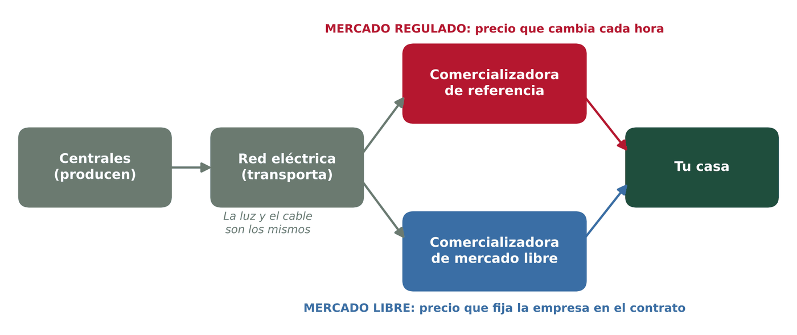
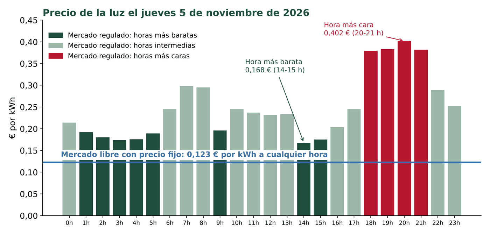

Inicio / Sostenibilidad aplicada al sistema productivo / Tema 2
Material de apoyo · Tema 2Mercado libre y mercado regulado
¿Qué tipo de tarifa de luz tenemos en casa y en qué se diferencian?
Descargar la presentación (PowerPoint, 300 KB)
La idea en dos frases
En el mercado regulado el precio de la luz cambia cada hora, según lo que cueste producirla ese día.
En el mercado libre el precio lo fija la empresa en el contrato y no depende de la hora del día (o solo de unos pocos tramos).
1. Lo que no cambia: la luz y el cable son los mismos
Elijas el mercado que elijas, la electricidad que llega a tu casa es exactamente la misma: sale de las mismas centrales y viaja por los mismos cables. No se corta la luz al cambiar de tarifa ni hace falta ninguna obra.
Lo único que cambia es a quién le compras la luz (la comercializadora) y cómo se calcula el precio.

2. Una comparación para entenderlo
| Se parece a... | Por qué | |
|---|---|---|
| Mercado regulado | La gasolina | Cada día, e incluso cada hora, el precio es distinto. Unos días te sale barato y otros caro. |
| Mercado libre | Una tarifa de móvil | Firmas un contrato con un precio cerrado y pagas lo mismo aunque cambie el mercado, hasta que la empresa lo revise. |
3. Las diferencias principales
| Mercado regulado (PVPC) | Mercado libre | |
|---|---|---|
| ¿Quién te vende la luz? | Solo unas pocas empresas autorizadas, llamadas comercializadoras de referencia. | Cualquier comercializadora: hay cientos. |
| ¿Quién fija el precio? | El Gobierno, con una fórmula ligada al mercado mayorista de electricidad. | La empresa, en la oferta que tú aceptas. |
| ¿Cómo es el precio? | Distinto cada hora del día. | Fijo las 24 horas o con dos o tres tramos (más barato de noche y los fines de semana). |
| ¿Se puede saber lo que pagarás? | No del todo: depende de cómo vaya el mercado. | Sí: el precio está en el contrato. |
| Bono social (descuento para familias vulnerables) | Sí, solo se puede pedir aquí. | No. |
| Extras y permanencia | No hay. | Puede haber descuentos, packs con gas o servicios y, a veces, permanencia. |
4. Un día real: ¿cuál salió más barato?
El gráfico compara el precio del mercado regulado hora a hora del jueves 5 de noviembre de 2026 con una oferta real de mercado libre con precio fijo.

- En el mercado regulado, la misma energía costaba 0,168 € a las 14 h y 0,402 € a las 20 h: más del doble. La media del día fue de 0,249 €/kWh.
- La hora más cara coincide con la tarde-noche, cuando llegamos a casa y encendemos de todo a la vez.
- Ese día, la oferta de precio fijo salió más barata a todas horas. No siempre es así: en épocas en las que el mercado está barato, el regulado puede salir mejor.
5. ¿Cuál conviene?
| Puede convenir el mercado regulado si... | Puede convenir el mercado libre si... |
|---|---|
| Puedes mover el consumo a las horas baratas (poner la lavadora a mediodía o de madrugada). | Prefieres saber siempre lo que vas a pagar. |
| Tienes derecho al bono social. | Gastas mucho por la tarde y por la noche, cuando el regulado es más caro. |
| No quieres permanencias ni letra pequeña. | Encuentras una oferta clara y sin permanencia. |
Cambiar de mercado o de compañía no cuesta nada (salvo si el contrato tiene permanencia) y se puede volver atrás.
6. ¿Cómo sé cuál tengo en casa?
Mira la primera página de la factura de la luz:
- Si pone PVPC o «precio voluntario para el pequeño consumidor», estás en el mercado regulado.
- Si aparece el nombre de una oferta o plan (por ejemplo, «Tarifa Zen» o «Plan Estrella»), estás en el mercado libre.
- Busca también el precio del kWh en el apartado «término de energía»: es el dato que usamos en la práctica de consumo eléctrico.
Comprueba que lo has entendido
- ¿Qué cambia y qué no cambia cuando una familia pasa del mercado regulado al libre?
- Según el gráfico, ¿a qué hora del 5 de noviembre era mejor cargar el portátil en el mercado regulado? ¿Y a qué hora era peor?
- Tu familia gasta mucha luz entre las 19 y las 22 h. ¿Qué mercado os recomendarías y por qué?
- ¿En qué mercado estáis en tu casa? Míralo en la factura y anota el precio del kWh: ______ €/kWh